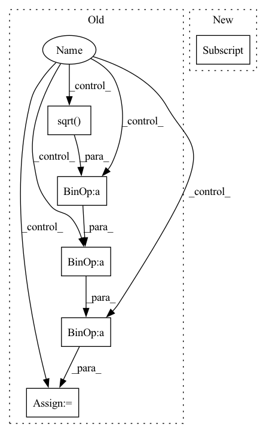

Pattern ID :19416

Before Change
return C, D
def _weights(self, eigvals, eigvecs, views):
if self._two_view:
w_y = self.principal_components[1].components_.T @ np.diag(1 / np.sqrt(self.Bs[1])) @ eigvecs
w_x = (
self.principal_components[0].components_.T
@ np.diag(1 / self.Bs[0])
@ self.R_12
@ np.diag(1 / np.sqrt(self.Bs[1]))
@ eigvecs
/ np.sqrt(eigvals)
)
self.weights = [w_x, w_y]
else:
self.weights = [
Vt.T
@ np.diag(1 / np.sqrt(B))
@ eigvecs[split: self.splits[i + 1], : self.latent_dims]
for i, (split, Vt, B) in enumerate(
zip(self.splits[:-1], views, self.Bs)
)
After Change
def _weights(self, eigvals, eigvecs, views):
R, B = self._get_R_B(views)
R_12 = R[0].T @ R[1]
w_y = self.principal_components[1].components_.T @ np.diag(1 / np.sqrt(B[1])) @ eigvecs
w_x = (
self.principal_components[0].components_.T
In pattern: SUPERPATTERN
Frequency: 3
Non-data size: 6
Instances
Fragment ID: 63398951
Project Name: jameschapman19/cca_zoo
Commit Name: 473764a31d2ce9acb7d9e5b320fab01061bcf2d0
Time: 2022-10-21
Author: james.chapman.19@ucl.ac.uk
File Name: cca_zoo/models/_rcca.py
M Class Name: rCCA
N Class Name: rCCA
M Method Name: _weights(4)
N Method Name: _weights(4)
M Parent Class: _BaseCCA
N Parent Class: _BaseCCA
M File Name: cca_zoo/models/_rcca.py
N File Name: cca_zoo/models/_rcca.py
M Start Line: 110
M End Line: 131
N Start Line: 104
N End Line: 115
'>
Before Change
// - eta -> η
// - pred_image_direction -> "direction pointingc to x_t"
// - pred_prev_image -> "x_t-1"
for t in tqdm.tqdm(reversed(range(num_inference_steps)), total=num_inference_steps):
// 1. predict noise residual
with torch.no_grad():
residual = self.unet(image, inference_step_times[t])
if isinstance(residual, dict):
residual = residual["sample"]
// 2. predict previous mean of image x_t-1
pred_prev_image = self.noise_scheduler.step(residual, image, t, num_inference_steps, eta)
// 3. optionally sample variance
variance = 0
if eta > 0:
noise = torch.randn(image.shape, generator=generator).to(image.device)
variance = self.noise_scheduler.get_variance(t, num_inference_steps).sqrt() * eta * noise
// 4. set current image to prev_image: x_t -> x_t-1
image = pred_prev_image + variance
return image
After Change
// 2. predict previous mean of image x_t-1 and add variance depending on eta
// do x_t -> x_t-1
image = self.scheduler.step(residual, t, image, eta)["prev_sample"]
return {"sample": image}
'>
Fragment ID: 63398949
Project Name: huggingface/diffusers
Commit Name: f448360bd0dfe5e28ee65ab2130532db91d5eafe
Time: 2022-07-15
Author: patrick.v.platen@gmail.com
File Name: src/diffusers/pipelines/ddim/pipeline_ddim.py
M Class Name: DDIMPipeline
N Class Name: DDIMPipeline
M Method Name: __call__(6)
N Method Name: __call__(6)
M Parent Class: DiffusionPipeline
N Parent Class: DiffusionPipeline
M File Name: src/diffusers/pipelines/ddim/pipeline_ddim.py
N File Name: src/diffusers/pipelines/ddim/pipeline_ddim.py
M Start Line: 35
M End Line: 77
N Start Line: 42
N End Line: 59
'>
Before Change
// - eta -> η
// - pred_image_direction -> "direction pointingc to x_t"
// - pred_prev_image -> "x_t-1"
for t in tqdm.tqdm(reversed(range(num_inference_steps)), total=num_inference_steps):
// 1. predict noise residual
timesteps = torch.tensor([inference_step_times[t]] * image.shape[0], device=torch_device)
pred_noise_t = self.unet(image, timesteps)
if isinstance(pred_noise_t, dict):
pred_noise_t = pred_noise_t["sample"]
// 2. predict previous mean of image x_t-1
pred_prev_image = self.noise_scheduler.step(pred_noise_t, image, t, num_inference_steps, eta)
// 3. optionally sample variance
variance = 0
if eta > 0:
noise = torch.randn(image.shape, generator=generator).to(image.device)
variance = self.noise_scheduler.get_variance(t, num_inference_steps).sqrt() * eta * noise
// 4. set current image to prev_image: x_t -> x_t-1
image = pred_prev_image + variance
// decode image with vae
image = self.vqvae.decode(image)
After Change
// 2. predict previous mean of image x_t-1 and add variance depending on eta
// do x_t -> x_t-1
image = self.scheduler.step(residual, t, image, eta)["prev_sample"]
// decode image with vae
image = self.vqvae.decode(image)
return {"sample": image}
'>
Fragment ID: 63398955
Project Name: huggingface/diffusers
Commit Name: f448360bd0dfe5e28ee65ab2130532db91d5eafe
Time: 2022-07-15
Author: patrick.v.platen@gmail.com
File Name: src/diffusers/pipelines/latent_diffusion_uncond/pipeline_latent_diffusion_uncond.py
M Class Name: LatentDiffusionUncondPipeline
N Class Name: LatentDiffusionUncondPipeline
M Method Name: __call__(6)
N Method Name: __call__(6)
M Parent Class: DiffusionPipeline
N Parent Class: DiffusionPipeline
M File Name: src/diffusers/pipelines/latent_diffusion_uncond/pipeline_latent_diffusion_uncond.py
N File Name: src/diffusers/pipelines/latent_diffusion_uncond/pipeline_latent_diffusion_uncond.py
M Start Line: 31
M End Line: 71
N Start Line: 31
N End Line: 50